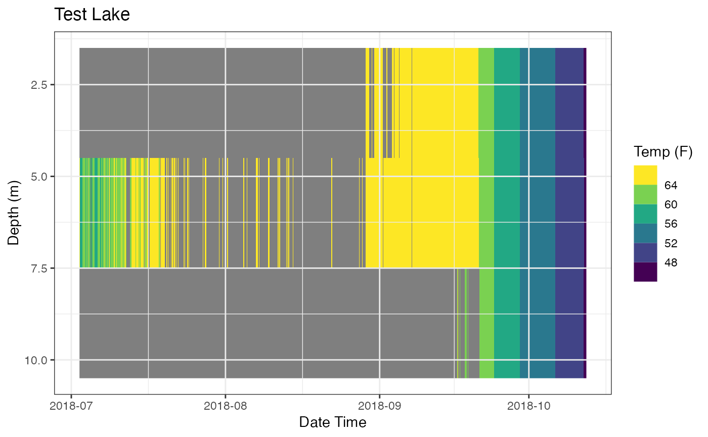
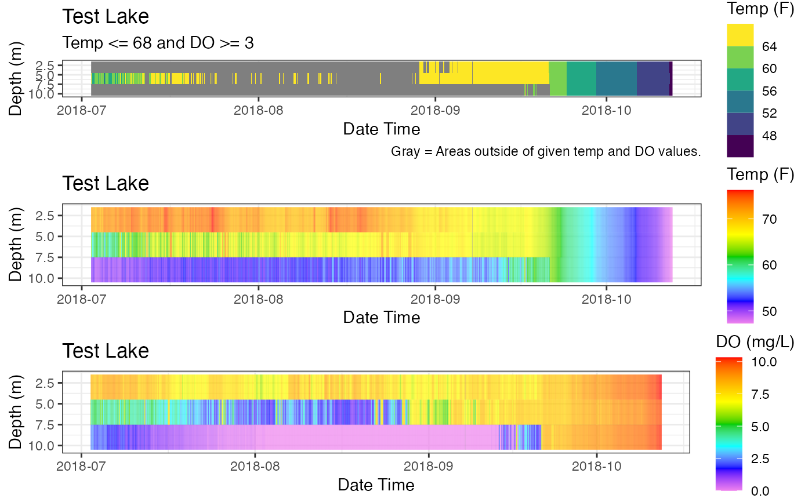

Generates a heat map of temperature from depth profile data. The data is filtered for temperature and dissolved oxygen levels prior to plotting.
plot_oxythermal(
data,
col_datetime,
col_depth,
col_temp,
col_do,
thresh_temp = 30,
operator_temp = "<=",
thresh_do = 3,
operator_do = ">=",
lab_datetime = NA,
lab_depth = NA,
lab_temp = NA,
lab_title = NA,
boo_interpolate = FALSE,
boo_contours = FALSE
)data frame of site id (optional), data/time, depth , and measurement (e.g., temperature).
Column name, Date Time
Column name, Depth
Column name, Temperature
Column name, Dissolved Oxygen
Threshold for temperature, Default = 30
Operator for temperature, Default is <= Valid values of >=, >, <=, <
Threshold for dissolved oxygen, Default is 3
Operator for dissolved oxygen, Default is >= Valid values of >=, >, <=, <
Plot label date time (x-axis), Default = col_datetime
Plot label for depth (y-axis), Default = col_depth
Plot label for temperatue (legend), Default = col_measure
Plot title, Default = NA
Boolean as to use interpolate in geom_raster, Default = FALSE
Boolean to draw contours, Default = FALSE
a ggplot object
The heat map will show the acceptable habitat based on user inputs. Can be used with any parameters.
A plot is returned that can be saved with `ggsave(filename)`.
Labels (and title) are function input parameters. If they are not used the plot will not be modified.
The default theme is `theme_bw()`.
The plot is created with `ggplot2::geom_raster()`. Interpolation is possible with boo_interpolate (default is FALSE).
The returned object is a ggplot object so it can be further manipulated.
# Data (Test Lake)
data <- laketest
# Column Names
col_datetime <- "Date.Time"
col_depth <- "Depth"
col_temp <- "temp_F"
col_do <- "DO_conc"
# Data values
thresh_temp <- 68
operator_temp <- "<="
thresh_do <- 3
operator_do <- ">="
# Plot Labels
lab_datetime <- "Date Time"
lab_depth <- "Depth (m)"
lab_temp <- "Temp (F)"
lab_title <- "Test Lake"
# Create Plot
p_ot <- plot_oxythermal(data = data
, col_datetime = col_datetime
, col_depth = col_depth
, col_temp = col_temp
, col_do = col_do
, thresh_temp = thresh_temp
, operator_temp= operator_temp
, thresh_do = thresh_do
, operator_do = operator_do
, lab_datetime = lab_datetime
, lab_depth = lab_depth
, lab_temp = lab_temp
, lab_title = lab_title)
# Print Plot
print(p_ot)
# Demo ability to tweak the plot
## move gridlines on top of plot
p_ot + ggplot2::theme(panel.ontop = TRUE
, panel.background = ggplot2::element_rect(color = NA
, fill = NA))

## Add subtitle and caption
myST <- paste0("Temp ", operator_temp, " ", thresh_temp
, " and DO ", operator_do, " ", thresh_do)
p_ot <- p_ot +
ggplot2::labs(subtitle = myST) +
ggplot2::labs(caption = paste0("Gray = Areas outside of given"
, " temp and DO values."))
# save plot to temp directory
tempdir() # show the temp directory
#> [1] "/var/folders/24/8k48jl6d249_n_qfxwsl6xvm0000gn/T//RtmpBF4qhf"
ggplot2::ggsave(file.path(tempdir(), "TestLake_plotOxythermal.png")
, plot = p_ot)
#> Saving 6.67 x 6.67 in image
# For Comparison, heatmaps of Temperature and DO
# heat map, Temp
p_hm_temp <- plot_heatmap(data = data
, col_datetime = col_datetime
, col_depth = col_depth
, col_measure = col_temp
, lab_datetime = lab_datetime
, lab_depth = lab_depth
, lab_measure = lab_temp
, lab_title = lab_title
, contours = FALSE)
# heat map, DO
p_hm_do <- plot_heatmap(data = data
, col_datetime = col_datetime
, col_depth = col_depth
, col_measure = col_do
, lab_datetime = lab_datetime
, lab_depth = lab_depth
, lab_measure = "DO (mg/L)"
, lab_title = lab_title
, contours = FALSE)
# Plot, Combine all 3
p_oxy3 <- gridExtra::grid.arrange(p_ot, p_hm_temp, p_hm_do)

p_oxy3
#> TableGrob (3 x 1) "arrange": 3 grobs
#> z cells name grob
#> 1 1 (1-1,1-1) arrange gtable[layout]
#> 2 2 (2-2,1-1) arrange gtable[layout]
#> 3 3 (3-3,1-1) arrange gtable[layout]
# save plot to temp directory
tempdir() # show the temp directory
#> [1] "/var/folders/24/8k48jl6d249_n_qfxwsl6xvm0000gn/T//RtmpBF4qhf"
ggplot2::ggsave(file.path(tempdir(), "TestLake_plotOxythermal_3.png")
, plot = p_oxy3)
#> Saving 6.67 x 6.67 in image